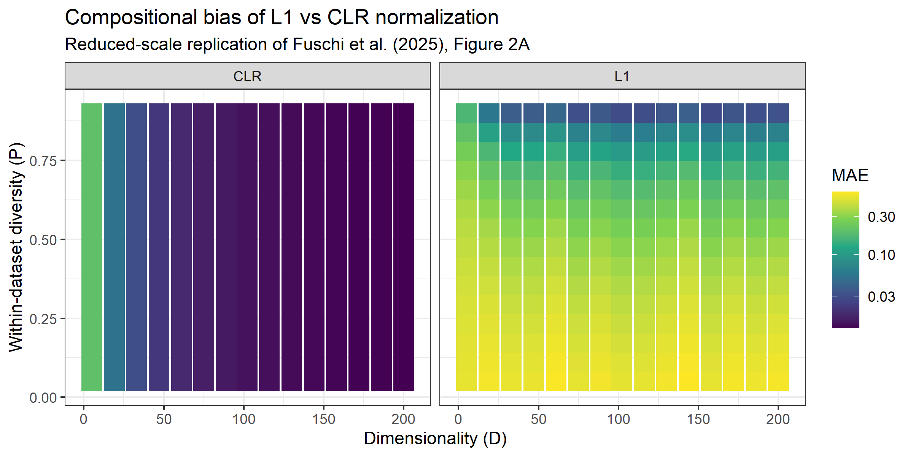

#-----------------------------------------------------------------------#notebook_exam_statistical_data_analysis
Introduction
The aim of this notebook is to explain the scripts found in the folder 02_new_scripts/.
Some scripts require the user to provide an input so, instead of sourcing and running them in this notebook, some results have been generated outside this script (using the script for_notebook.R) and then pasted in their relative code chunks.
To separate the code chunks from the plain text, spacing bars like this
were put at the begin and at the end of the code chunks that they need to separe.
Scripts can be divided into three categories:
base functions: small scripts that generate simple functions (a wise man once said: “if you have to do it more than once, instead write a script!”).
The base functions are:datasummary.Rfilt_data.Rpseudocount.Rgenerate_matrix_factors.Rpielou_ind.R
orchestrators: these are slightly more complex scripts than the base functions; their job is to use base functions to generate something more complex.
The orchestrators are:clr_pearson.RNorTa_simulation.Rdata_sim_ph_driven.R
standalone analysis: using the previous functions, these scripts generate the analyses that are important for this project. The standalone analyses are:
compositional_bias_D_P.Rph_dataset_diversity_confrontation.R
Let’s start by looking at the base functions scripts:
Base functions
Base functions are the smallest building blocks of this project: each one does a single, well-defined job (summarizing data, filtering, replacing zeroes, generating a correlation matrix, or computing diversity), and gets reused by the more complex scripts (orchestrators and standalone analysis) described later.
datasummary.R
What it does: defines the function datasum(), which prints a compact summary of any numeric dataset (tibble, data.frame, list, or matrix).
The summary includes:
- dimensions (rows, columns);
- basic statistics: minimum, maximum, mean, median, standard deviation, skewness;
- zero structure: total number of zeroes and their percentage;
- for square numeric matrices only: determinant and minimum eigenvalue (useful to check properties of correlation/covariance matrices).
Why is it here: during the project, a quick and consistent way to inspect matrices and tables was needed.
datasum() centralises these checks in a single reusable function, which is particularly handy for compositional and metagenomic data, where zeroes and matrix properties matter for statistical analyses.
How it works: the function datasum():
checks if
xis a square numeric matrix and, if so and if there are noNA/infinite values, computes the determinant and minimum eigenvalue;coerces the input to a tibble (converting lists to data frames if needed);
computes min, max, mean, median, standard deviation, and skewness (third standardized moment);
counts zeroes and their percentage;
prints all these quantities with a short label derived from the object name;
returns them invisibly as a named list, so they can be reused programmatically.
# brings the datasummary script into scope
source(
list.files(
path = here(),
pattern = "^datasummary\\.R$",
full.names = TRUE,
recursive = TRUE
)
)
# generate an example matrix
example_matrix <- matrix(c(22, 3, 5, 7, 9, 10, 0, 0, 1),
nrow = 3,
ncol = 3,
dimnames = list(c("alfa", "beta", "gamma"), c("A", "B", "C"))
)
# print the example matrix
print(example_matrix) A B C
alfa 22 7 0
beta 3 9 0
gamma 5 10 1# apply the datasum function from the scoped script
datasum(example_matrix)The type of dataset before becoming a tibble was double
--- exam ---
number of columns: 3
number of rows: 3
maximum value: 22
minimum value: 0
mean value: 6.333333
median value: 5
standard deviation: 6.96
skewness: 1.06
determinant value 177
minimum eigenvalue -5.996592
the total number of zeroes in exam is 2
the percentage of zeroes in exam is: 22.22 %filt_data.R
What it does: filters a metagenomic OTU count table (samples × OTUs) by prevalence and abundance, and shows a before/after summary using datasum().
Why is it here: metagenomic data (like HMP2 used in the original paper and for this project) are compositional and very sparse.
Before any downstream analysis, it is important to remove rare and low-abundance OTUs that mostly add noise and can distort statistical results.
How it works: the script defines the function filt_data(), which:
- prints a summary of the data before filtering using
datasum(); - asks the user for a prevalence threshold (a number between 0 and 1), i.e. the minimum fraction of samples in which an OTU must be present (non-zero) to be kept.
If the user enters an invalid value, the script prints a friendly warning and asks again; - keeps only OTUs whose prevalence is at least this threshold;
- then applies an abundance filter: among the remaining OTUs, it keeps only those whose median non-zero count is at least
abundance_threshold(default = 5); - prints a summary of the data after filtering and reports the thresholds used;
- returns (invisibly) a list containing:
samp_filt: the filtered OTU table;taxa_filt(if a taxonomy table calledtaxaexists in the environment): the taxonomy table restricted to the surviving OTUs.
The function can be used both interactively (default, with prompt) and non-interactively (passing prevalence_threshold as an argument), which is useful for sensitivity analyses over a range of thresholds.
Note: due to the interactive nature of the filt_data.R script (the script asks the user for a number between 0 and 1 which is used as threshold to set the filter), the following data has been generated with the script for_notebook.R, then loaded here.
#-----------------------------------------------------------------------#
The following data were generated with the script 'data_sim_ph_driven.R': OTU_1 OTU_2 OTU_3 OTU_4 OTU_5 OTU_6 OTU_7 OTU_8 OTU_9
[1,] 17 0 23 0 0 0 0 9 23
[2,] 8 0 0 0 0 0 0 25 0
[3,] 30 0 0 0 0 0 0 21 0
[4,] 16 0 0 0 23 0 23 19 0
[5,] 0 0 13 23 0 23 0 15 13
[6,] 0 0 0 0 29 0 29 16 0
[7,] 0 18 0 0 0 0 0 28 0
[8,] 0 0 0 18 0 18 0 22 0
These were the unfiltered data.
Now we will apply the filt_data() function with a threshold of 0.3, obtaining the
following data: OTU_1 OTU_8
[1,] 17 9
[2,] 8 25
[3,] 30 21
[4,] 16 19
[5,] 0 15
[6,] 0 16
[7,] 0 28
[8,] 0 22
#-----------------------------------------------------------------------#pseudocount.R
What it does: defines the function pseudocount(), which converts count data to row-wise proportions and replaces zeroes with row-specific pseudocounts computed from a user-defined threshold.
Why is it here: before applying the Centered Log-Ratio (CLR) transformation, the zeroes in the dataset need to be replaced with pseudocounts, since log(0) returns -Inf, which is not usable in statistical analysis.
How it works:
the script first asks the user for a number between 0 and 1 (if the user does not provide a valid one, the script keeps asking for it), that will be used as threshold;
it computes the detection limit as 1 / (the sum of the values in the row);
the pseudocount is computed as the detection limit times the threshold provided by the user;
it converts every row’s counts into proportions;
it substitutes every zero found in a row with the pseudocount for that row.
Note: due to the interactive nature of the pseudocount.R script (the script asks the user for a number between 0 and 1 which is used as threshold to set the filter), the following data has been generated with the script for_notebook.R, then loaded here.
#-----------------------------------------------------------------------#
Now we will print the example_matrix that we used before: A B C
alfa 22 7 0
beta 3 9 0
gamma 5 10 1
After using the pseudocount() function with 0.5 as threshold,
the following matrix is obtained: A B C
alfa 0.76 0.25 0.31
beta 0.24 0.75 0.62
gamma 0.02 0.04 0.06
#-----------------------------------------------------------------------#generate_matrix_factors.R
What it does: defines the function generate_matrix_factors(), which builds a valid nxn correlation matrix (symmetric, unit diagonal, positive semi-definite, values from -1 to +1) with an exact, controlled zero pattern, by splitting taxa into n_groups latent groups.
Why is it here: in the data_sim_ph_driven.R script, the function “rmvnorm” (“Random MultiVariateNORMal”) is used, which makes it possible to generate random multivariate normal distributions.
One of the inputs of the “rmvnorm” function is the correlation matrix. Using this script makes it possible to obtain a controlled (and yet partially randomized) correlation matrix.
How it works: generate_matrix_factors(n, n_groups, ...):
- randomly assigns each of the
ntaxa to one ofn_groupsgroups; - builds a loadings matrix \(\Lambda\) where each taxon has a random value only in the column of its own group;
- computes \(\Sigma = \Lambda\Lambda'\) (always PSD, whatever \(\Lambda\) is);
- rescales it to a proper correlation matrix (unit diagonal);
- returns the matrix, the group assignment, and the exact number of zero pairs (taxa in different groups end up with correlation exactly 0).
# brings the generate_matrix_factors script into scope
source(
list.files(
path = here(),
pattern = "^generate_matrix_factors\\.R$",
full.names = TRUE,
recursive = TRUE
)
)
# generate a demonstrative matrix with taxa = n = 10, number of groups = n_groups = 3, seed = 42
corr_mat_notebook <- generate_matrix_factors(n = 10, n_groups = 3, seed = 42)
# print the actual matrix
print(corr_mat_notebook$mat) [,1] [,2] [,3] [,4] [,5] [,6] [,7] [,8] [,9] [,10]
[1,] 1 0 1 0 0 -1 0 0 1 0
[2,] 0 1 0 1 1 0 0 0 0 0
[3,] 1 0 1 0 0 -1 0 0 1 0
[4,] 0 1 0 1 1 0 0 0 0 0
[5,] 0 1 0 1 1 0 0 0 0 0
[6,] -1 0 -1 0 0 1 0 0 -1 0
[7,] 0 0 0 0 0 0 1 1 0 1
[8,] 0 0 0 0 0 0 1 1 0 1
[9,] 1 0 1 0 0 -1 0 0 1 0
[10,] 0 0 0 0 0 0 1 1 0 1# print a correlation matrix with no OTU correlated
not_corr_mat_notebook <- generate_matrix_factors(n = 10, n_groups = 10, seed = 42)
# print the non-correlation matrix
print(not_corr_mat_notebook$mat) [,1] [,2] [,3] [,4] [,5] [,6] [,7] [,8] [,9] [,10]
[1,] 1 0 0 0 0 0 0 0 0 0
[2,] 0 1 0 0 0 0 0 0 0 0
[3,] 0 0 1 0 0 0 0 0 0 0
[4,] 0 0 0 1 0 0 0 0 0 0
[5,] 0 0 0 0 1 0 0 0 0 0
[6,] 0 0 0 0 0 1 0 0 0 0
[7,] 0 0 0 0 0 0 1 0 0 0
[8,] 0 0 0 0 0 0 0 1 0 0
[9,] 0 0 0 0 0 0 0 0 1 0
[10,] 0 0 0 0 0 0 0 0 0 1pielou_ind.R
What it does: defines the function pielou_ind(), which computes the dataset diversity as the mean of the pielou indexes of all the samples in the dataset.
Why is it here: it is a good parameter (also used in the original paper) that makes it possible to quantify the species diversity of a sample.
It is needed for the final analysis.
How it works: pielou_ind(x, per_sample = FALSE):
- computes each sample’s relative abundances and Shannon entropy, handling zeroes with the standard convention \(0 \cdot \ln(0) = 0\), so it works directly on sparse real data, no pseudocounts needed;
- normalizes by \(\ln(D)\) (D = number of taxa), so the index stays comparable across datasets of different size;
- returns the mean across samples by default, or the full per-sample vector if
per_sample = TRUE.
#-----------------------------------------------------------------------# OTU_1 OTU_2 OTU_3 OTU_4 OTU_5 OTU_6 OTU_7 OTU_8 OTU_9
[1,] 17 0 23 0 0 0 0 9 23
[2,] 8 0 0 0 0 0 0 25 0
[3,] 30 0 0 0 0 0 0 21 0
[4,] 16 0 0 0 23 0 23 19 0
[5,] 0 0 13 23 0 23 0 15 13
[6,] 0 0 0 0 29 0 29 16 0
[7,] 0 18 0 0 0 0 0 28 0
[8,] 0 0 0 18 0 18 0 22 0
Applying the pielou_ind() function to the dataset
(using per_sample = FALSE),
we obtain the within dataset diversity parameter:[1] 0.47
Now, if we use the same function with per_sample = TRUE,
we obtain a vector with all of the pielou indexes of the
data (data has 8 samples, which means 8 rows, so we will
obtain 8 indexes):[1] 0.61 0.25 0.31 0.63 0.72 0.48 0.30 0.50
If we compute the mean of the previously generated vector,
we obtain again the within dataset diversity parameter:[1] 0.47
#-----------------------------------------------------------------------#Orchestrators
Orchestrators are the next level of base functions: instead of doing a single small job, they combine several base functions together into a full step of the analysis (filtering + pseudocount + CLR + correlation, or building a correlation matrix + simulating data from it).
clr_pearson.R
What it does: defines the function clr_on_data(), which runs the full pipeline on an OTU table: - filters it (filt_data()), - replaces zeroes with pseudocounts (pseudocount()), - applies the CLR transformation, - computes the OTU x OTU Pearson correlation matrix.
Why is it here: one of the main takeaways of the original paper is that the “blessing of dimensionality” makes the use of the centered log-ratio transformation in combination with Pearson’s correlation coefficient (from now on, clr+Pearson) a reliable tool for analyzing correlations between taxa. Moreover, clr+Pearson is used as a benchmark to evaluate how other methods behave in a high-dimensional setting (dimensionality = D = number of taxa > 100). Given the importance of this aspect, the method was replicated here, with the added possibility of choosing which filters to apply to the data.
How it works: clr_on_data(x) runs the four steps above in sequence and returns (invisibly) a list with samp_filt (the filtered table), y_clr (the CLR-transformed table), and cor_matrix (the resulting correlation matrix).
Note: due to the interactive nature of the clr_pearson.R script (it uses both filt_data() and pseudocount(), which both ask for user input), the source() call below is commented out, and the following data has been generated with the script for_notebook.R, then loaded here.
#-----------------------------------------------------------------------#
Now we will re-print some data that we already used: OTU_1 OTU_2 OTU_3 OTU_4 OTU_5 OTU_6 OTU_7 OTU_8 OTU_9
[1,] 17 0 23 0 0 0 0 9 23
[2,] 8 0 0 0 0 0 0 25 0
[3,] 30 0 0 0 0 0 0 21 0
[4,] 16 0 0 0 23 0 23 19 0
[5,] 0 0 13 23 0 23 0 15 13
[6,] 0 0 0 0 29 0 29 16 0
[7,] 0 18 0 0 0 0 0 28 0
[8,] 0 0 0 18 0 18 0 22 0
We will now apply the clr_on_data() function to the previous data,
using 0.33 as prevalence threshold for the filt_data()
part and 0.5 for the pseudocount() part.
The results of the pipeline are the following:
Filtered sample OTU_1 OTU_8
[1,] 17 9
[2,] 8 25
[3,] 30 21
[4,] 16 19
[5,] 0 15
[6,] 0 16
[7,] 0 28
[8,] 0 22
Log transformed data OTU_1 OTU_8
[1,] 0.32 -0.32
[2,] -0.57 0.57
[3,] 0.18 -0.18
[4,] -0.09 0.09
[5,] -1.70 1.70
[6,] -1.73 1.73
[7,] -2.01 2.01
[8,] -1.89 1.89
Correlation matrix OTU_1 OTU_8
OTU_1 1 -1
OTU_8 -1 1
#-----------------------------------------------------------------------#NorTa_simulation.R
What it does: defines the function norta_simulation(), which builds a correlation matrix with generate_matrix_factors() and then simulates a sparse count dataset from it, following the NorTA (“Normal To Anything”) approach: correlated normal data are converted to uniform percentiles and then mapped through the quantile function of a Zero-Inflated Negative Binomial (ZINB) distribution.
Why is it here: the genesis of this script was part of the work that lead me to obtain data_sim_ph_driven.R.
I needed a script that allowed me to generate compositional data.
Why though? Because to validate a correlation-estimation method, it is useful to have simulated data with a known correlation structure.
This was part of the work in the original paper and I wanted to try to create my version for it.
How it works: norta_simulation(n, n_groups, N, mu, size, phi, seed):
- builds the correlation matrix and simulates
Ncorrelated normal samples from it; - converts the normal data to uniform percentiles via
pnorm()(a monotonic transformation, so rank correlation is preserved); - maps the percentiles through the ZINB quantile function, using a single
phi(zero-inflation probability) shared by all taxa.
#-----------------------------------------------------------------------#Caricamento del pacchetto richiesto: stats4Caricamento del pacchetto richiesto: splines
The following data are generated with the norta_simulation()
function defined in the NorTa_simulation.R script, using the
following parameters:
- n = 9;
- n_groups = 3;
- N = 11;
- seed = 42;Number of latent groups: 3
Zero pairs in R_true (exact, by construction): 54
Data generated with n_groups = 3 and n = 9 [,1] [,2] [,3] [,4] [,5] [,6] [,7] [,8] [,9]
[1,] 24 15 29 0 18 0 18 0 29
[2,] 23 19 27 0 13 0 13 0 27
[3,] 21 14 0 0 18 0 18 24 0
[4,] 33 13 14 0 19 0 19 19 14
[5,] 23 0 16 0 27 0 27 17 16
[6,] 0 19 21 27 12 27 12 0 21
[7,] 20 0 21 12 32 12 32 7 21
[8,] 17 23 0 16 0 16 0 27 0
[9,] 0 16 0 23 17 23 17 21 0
[10,] 19 25 0 14 0 14 0 22 0
[11,] 25 0 30 0 29 0 29 0 30
Correlation matrix with n_groups = 3 and n = 9 [,1] [,2] [,3] [,4] [,5] [,6] [,7] [,8] [,9]
[1,] 1 0 0 -1 0 -1 0 0 0
[2,] 0 1 0 0 -1 0 -1 0 0
[3,] 0 0 1 0 0 0 0 -1 1
[4,] -1 0 0 1 0 1 0 0 0
[5,] 0 -1 0 0 1 0 1 0 0
[6,] -1 0 0 1 0 1 0 0 0
[7,] 0 -1 0 0 1 0 1 0 0
[8,] 0 0 -1 0 0 0 0 1 -1
[9,] 0 0 1 0 0 0 0 -1 1
The following data are generated with the norta_simulation()
function defined in the NorTa_simulation.R script, using the
following parameters:
- n = 10;
- n_groups = 10;
- N = 10;
- seed = 42;
With a number of groups (n_groups) equal to the number of taxa
(number of taxa is the parameter n), it will resolve in having
zero taxa correlated to each other, leading to a unitary correlation matrix.Number of latent groups: 10
Zero pairs in R_true (exact, by construction): 90
Data generated with n_groups = n [,1] [,2] [,3] [,4] [,5] [,6] [,7] [,8] [,9] [,10]
[1,] 21 14 0 0 26 13 0 15 26 31
[2,] 11 14 0 20 0 20 22 24 0 21
[3,] 0 0 0 0 17 18 12 22 0 0
[4,] 20 0 27 11 22 19 0 28 22 17
[5,] 19 22 17 0 19 12 18 21 27 0
[6,] 26 19 24 24 22 0 16 21 0 0
[7,] 21 22 20 0 0 28 19 17 15 0
[8,] 21 14 15 24 23 27 10 22 27 0
[9,] 0 0 0 17 22 26 24 0 30 0
[10,] 17 11 15 18 18 16 17 9 8 0
Correlation matrix with n_groups = n [,1] [,2] [,3] [,4] [,5] [,6] [,7] [,8] [,9] [,10]
[1,] 1 0 0 0 0 0 0 0 0 0
[2,] 0 1 0 0 0 0 0 0 0 0
[3,] 0 0 1 0 0 0 0 0 0 0
[4,] 0 0 0 1 0 0 0 0 0 0
[5,] 0 0 0 0 1 0 0 0 0 0
[6,] 0 0 0 0 0 1 0 0 0 0
[7,] 0 0 0 0 0 0 1 0 0 0
[8,] 0 0 0 0 0 0 0 1 0 0
[9,] 0 0 0 0 0 0 0 0 1 0
[10,] 0 0 0 0 0 0 0 0 0 1
#-----------------------------------------------------------------------#data_sim_ph_driven.R
What it does: follows the same NorTA approach as NorTa_simulation.R, but sparsity is no longer a single value shared by all taxa: each taxon is given its own zero-inflation probability, based on the distance between the environmental pH and that taxon’s own pH optimum.
Why is it here: this script represents the main extension proposed in this project.
Rather than treating sparsity as an arbitrary simulation parameter, it derives it from a biological ambiental parameter (pH), so that the resulting sparsity pattern has an ecological interpretation.
How it works: data_sim_ph_driven(n_taxa, N_sample, ph, n_groups, ...):
- assigns each taxon a random pH optimum and tolerance (niche width);
- computes each taxon’s zero-inflation probability from a Gaussian “suitability” curve centred on its own optimum: well-matched taxa get a low zero-inflation probability, poorly-matched taxa get a high one;
- runs the same NorTA steps as
NorTa_simulation.R, using this per-taxon zero-inflation vector instead of a single shared value.
# brings the data_sim_ph_driven script into scope
source(
list.files(
path = here(),
pattern = "^data_sim_ph_driven\\.R$",
full.names = TRUE,
recursive = TRUE
)
)Standalone analysis
The final level of complexity of all the project.
The scripts presented in this section perform the main statistical analyses of the project.
Each analysis is designed to investigate a specific issue identified in the original paper and to assess its potential implications for the results.
compositional_bias_D_P.R
What it does: replicates Section 3.1 of the original paper: it quantifies how much the L1 and CLR normalizations distort correlation estimates, as dimensionality (D) and within-dataset diversity (P) vary.
The ground truth used is a fully uncorrelated dataset (true correlation exactly zero everywhere), so that any non-zero correlation observed after normalization can be attributed entirely to the normalization method itself.
Why is it here: it provides a direct, quantitative answer to whether CLR actually outperforms L1, and by how much, depending on dimensionality and diversity, rather than relying on a purely qualitative claim.
How it works: for each (D, P) combination on a 15x15 grid (a reduced version of the paper’s 40x39 grid, using N = 5,000 samples instead of 10,000, for time constraints):
- generates uncorrelated Gaussian data and tunes its diversity to the target P (via
pielou_ind()and a numerical root search); - applies the L1 and CLR normalizations and computes the resulting correlation matrices;
- records the mean absolute error of each method against the true (zero) correlation.
# brings the compositional_bias_D_P script into scope
source(
list.files(
path = here(),
pattern = "^compositional_bias_D_P\\.R$",
full.names = TRUE,
recursive = TRUE
)
)Running compositional bias analysis over a 15 x 15 grid (D x P), N = 5000 samples per dataset.
This replicates a reduced version of Section 3.1 in Fuschi et al. (2025).
Completed D = 5
Completed D = 19
Completed D = 33
Completed D = 47
Completed D = 61
Completed D = 75
Completed D = 89
Completed D = 102
Completed D = 116
Completed D = 130
Completed D = 144
Completed D = 158
Completed D = 172
Completed D = 186
Completed D = 200
Results saved to outputs/compositional_bias_results.rds ( 225 rows ).Heatmap saved to outputs/compositional_bias_heatmap.png# display the heatmap previously generated by compositional_bias_D_P.R
knitr::include_graphics(
list.files(
path = here(),
pattern = "^compositional_bias_heatmap\\.png$",
full.names = TRUE,
recursive = TRUE
)
)
ph_dataset_diversity_confrontation.R
What it does: uses data_sim_ph_driven() across a pH gradient, at five different levels of pH tolerance, and tracks how the within dataset diversity parameter changes, showing that narrow-tolerance (“specialist”) communities produce noisier, lower evenness, while wide-tolerance (“generalist”) communities stay stable and high.
Why is it here: this is the final example presented in this project, illustrating a concrete use case for data_sim_ph_driven.R: simulating how generalist and specialist bacteria respond differently to the same environmental pH.
How it works: loops over a pH gradient for five tolerance scenarios, computes pielou_ind() at each point, plots the five curves, and combines them into a single figure.
# brings the ph_dataset_diversity_confrontation script into scope
source(
list.files(
path = here(),
pattern = "^ph_dataset_diversity_confrontation\\.R$",
full.names = TRUE,
recursive = TRUE
)
)
Caricamento pacchetto: 'gridExtra'Il seguente oggetto è mascherato da 'package:dplyr':
combine
#----------------------------------------------------------------------#
pH and within dataset diversity calculated are:
ph pielou
1 3.6 0.52
2 4.0 0.64
3 4.4 0.60
4 4.8 0.51
5 5.2 0.55
6 5.6 0.52
7 6.0 0.55
8 6.4 0.58
9 6.8 0.61
10 7.2 0.58
11 7.6 0.57
12 8.0 0.54
13 8.4 0.54
14 8.8 0.52
15 9.2 0.55
16 9.6 0.51
17 10.0 0.55
18 10.4 0.56
#----------------------------------------------------------------------#
#----------------------------------------------------------------------#
pH and dataset diversity calculated are:
ph pielou_01
1 3.6 0.63
2 4.0 0.71
3 4.4 0.69
4 4.8 0.64
5 5.2 0.62
6 5.6 0.62
7 6.0 0.63
8 6.4 0.67
9 6.8 0.69
10 7.2 0.68
11 7.6 0.66
12 8.0 0.63
13 8.4 0.62
14 8.8 0.61
15 9.2 0.61
16 9.6 0.60
17 10.0 0.63
18 10.4 0.61
#----------------------------------------------------------------------#
#----------------------------------------------------------------------#
pH and dataset diversity calculated are:
ph pielou_02
1 3.6 0.68
2 4.0 0.73
3 4.4 0.74
4 4.8 0.71
5 5.2 0.69
6 5.6 0.68
7 6.0 0.70
8 6.4 0.73
9 6.8 0.74
10 7.2 0.74
11 7.6 0.72
12 8.0 0.69
13 8.4 0.67
14 8.8 0.66
15 9.2 0.66
16 9.6 0.66
17 10.0 0.67
18 10.4 0.64
#----------------------------------------------------------------------#
#----------------------------------------------------------------------#
pH and dataset diversity calculated are:
ph pielou_03
1 3.6 0.71
2 4.0 0.75
3 4.4 0.76
4 4.8 0.75
5 5.2 0.75
6 5.6 0.74
7 6.0 0.75
8 6.4 0.77
9 6.8 0.78
10 7.2 0.77
11 7.6 0.76
12 8.0 0.74
13 8.4 0.73
14 8.8 0.71
15 9.2 0.71
16 9.6 0.70
17 10.0 0.69
18 10.4 0.66
#----------------------------------------------------------------------#
#----------------------------------------------------------------------#
pH and dataset diversity calculated are:
ph pielou_04
1 3.6 0.74
2 4.0 0.77
3 4.4 0.78
4 4.8 0.79
5 5.2 0.79
6 5.6 0.79
7 6.0 0.79
8 6.4 0.80
9 6.8 0.80
10 7.2 0.80
11 7.6 0.79
12 8.0 0.78
13 8.4 0.77
14 8.8 0.75
15 9.2 0.74
16 9.6 0.73
17 10.0 0.71
18 10.4 0.69
#----------------------------------------------------------------------#
#----------------------------------------------------------------------#
The final plot has been saved in the <Plots> folder
#----------------------------------------------------------------------#